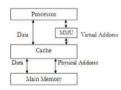

Explain Virtual Memory.
- Virtual memory is a memory management capability of an OS that uses hardware and software to allow a computer to
compensate for physical memory shortages by temporarily transferring data from RAM to disk storage.
- When we try to run a program, if it do not completely fit into the main memory the parts of its currently being
executed are stored in main memory and remaining portion is stored in secondary storage device such as HDD.
- When a new part of program is to be brought into main memory for execution and if the memory is full, it must replace another part which is already is in main memory.
- As this secondary memory is not actually part of system memory, so for CPU, secondary memory is Virtual Memory.
- Techniques that automatically more program and data blocks into physical memory when they are required for execution are called virtual memory
- When Virtual Memory is used, the address field is virtual address.
- Virtual Memory is used to logically extend the size of main memory.

Virtual Memory Organization